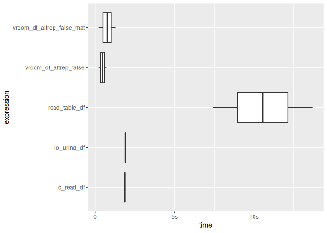
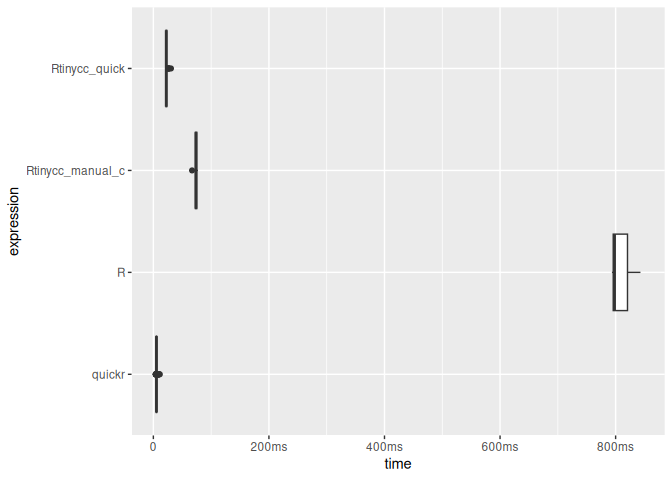
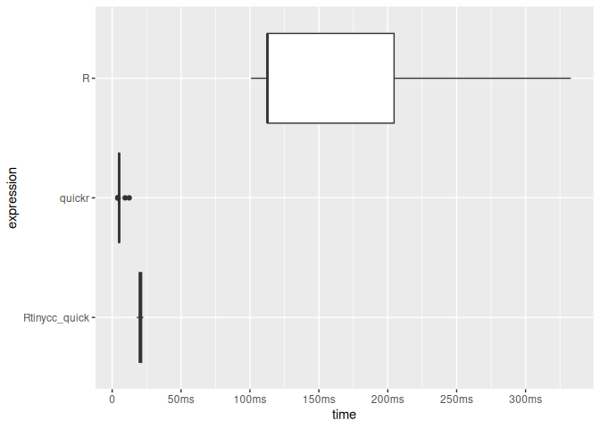
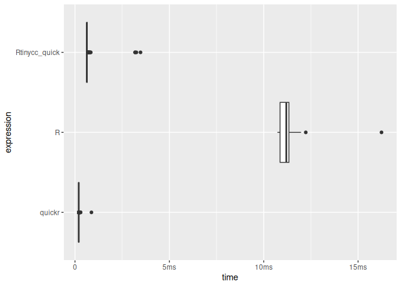
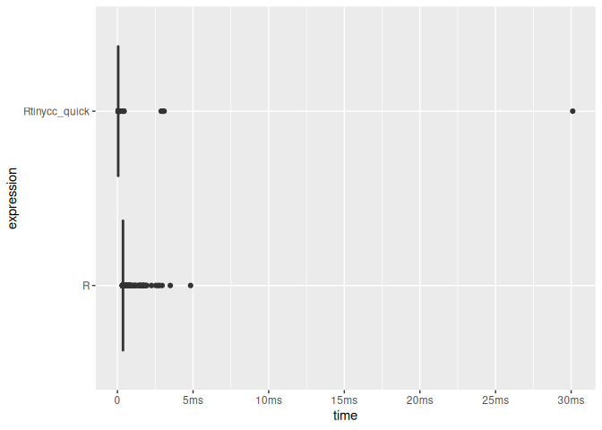
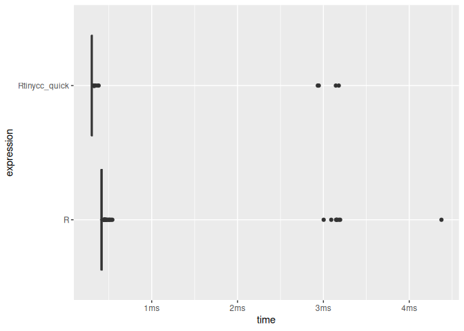

Builds TinyCC Cli and Library For C Scripting in R
Abstract
Rtinycc is an R interface to TinyCC, providing both CLI access and a libtcc-backed in-memory compiler. It includes an FFI inspired by Bun’s FFI for binding C symbols with predictable type conversions and pointer utilities, and an experimental and limited in scope R-to-C transpiler tcc_quick(), inspired by quickr that compiles declare() annotated R functions to C via TinyCC. The package works on unix-alikes and Windows and focuses on embedding TinyCC and enabling JIT-compiled bindings directly from R. Combined with treesitter.c, which provides C header parsers, it can be used to rapidly generate declarative bindings.
How it works
When you call tcc_compile(), Rtinycc generates C wrapper functions whose signature follows the .Call convention (SEXP in, SEXP out). These wrappers convert R types to C, call the target function, and convert the result back. TCC compiles them in-memory – no shared library is written to disk and no R_init_* registration is needed.
After tcc_relocate(), wrapper pointers are retrieved via tcc_get_symbol(), which internally calls RC_libtcc_get_symbol(). That function converts TCC’s raw void* into a DL_FUNC wrapped with R_MakeExternalPtrFn (tagged "native symbol"). On the R side, make_callable() creates a closure that passes this external pointer to .Call (aliased as .RtinyccCall to keep R CMD check happy).
The design follows CFFI’s API-mode pattern: instead of computing struct layouts and calling conventions in R (ABI-mode, like Python’s ctypes), the generated C code lets TCC handle sizeof, offsetof, and argument passing. Rtinycc never replicates platform-specific layout rules. The wrappers can also link against external shared libraries whose symbols TCC resolves at relocation time. For background on how this compares to a libffi approach, see the RSimpleFFI README.
On macOS the configure script strips -flat_namespace from TCC’s build to avoid BUS ERROR issues. Without it, TCC cannot resolve host symbols (e.g. RC_free_finalizer) through the dynamic linker. Rtinycc works around this with RC_libtcc_add_host_symbols(), which registers package-internal C functions via tcc_add_symbol() before relocation. Any new C function referenced by generated TCC code must be added there.
On Windows, the configure.win script generates a UCRT-backed msvcrt.def so TinyCC resolves CRT symbols against ucrtbase.dll (R 4.2+ uses UCRT).
Ownership semantics are explicit. Pointers from tcc_malloc() are tagged rtinycc_owned and can be released with tcc_free() (or by their R finalizer). Generated struct constructors use a struct-specific tag (struct_<name>) with an RC_free_finalizer; free them with struct_<name>_free(), not tcc_free(). Pointers from tcc_data_ptr() are tagged rtinycc_borrowed and are never freed by Rtinycc. Array returns are copied into a fresh R vector; set free = TRUE only when the C function returns a malloc-owned buffer.
Installation
install.packages(
'Rtinycc',
repos = c('https://sounkou-bioinfo.r-universe.dev',
'https://cloud.r-project.org')
)Usage
CLI
The CLI interface compiles C source files to standalone executables using the bundled TinyCC toolchain.
library(Rtinycc)
src <- system.file("c_examples", "forty_two.c", package = "Rtinycc")
exe <- tempfile()
tcc_run_cli(c(
"-B", tcc_prefix(),
paste0("-I", tcc_include_paths()),
paste0("-L", tcc_lib_paths()),
src, "-o", exe
))
#> [1] 0
Sys.chmod(exe, mode = "0755")
system2(exe, stdout = TRUE)
#> [1] "42"For in-memory workflows, prefer libtcc instead.
In-memory compilation with libtcc
We can compile and call C functions entirely in memory. This is the simplest path for quick JIT compilation.
state <- tcc_state(output = "memory")
tcc_compile_string(state, "int forty_two(){ return 42; }")
#> [1] 0
tcc_relocate(state)
#> [1] 0
tcc_call_symbol(state, "forty_two", return = "int")
#> [1] 42The lower-level API gives full control over include paths, libraries, and the R C API. Using #define _Complex as a workaround for TCC’s lack of complex type support, we can link against R’s headers and call into libR.
state <- tcc_state(output = "memory")
tcc_add_include_path(state, R.home("include"))
#> [1] 0
tcc_add_library_path(state, R.home("lib"))
#> [1] 0
code <- '
#define _Complex
#include <R.h>
#include <Rinternals.h>
double call_r_sqrt(void) {
SEXP fn = PROTECT(Rf_findFun(Rf_install("sqrt"), R_BaseEnv));
SEXP val = PROTECT(Rf_ScalarReal(16.0));
SEXP call = PROTECT(Rf_lang2(fn, val));
SEXP out = PROTECT(Rf_eval(call, R_GlobalEnv));
double res = REAL(out)[0];
UNPROTECT(4);
return res;
}
'
tcc_compile_string(state, code)
#> [1] 0
tcc_relocate(state)
#> [1] 0
tcc_call_symbol(state, "call_r_sqrt", return = "double")
#> [1] 4Pointer utilities
Rtinycc ships a set of typed memory access functions similar to what the ctypesio package offers, but designed around our FFI pointer model. Every scalar C type has a corresponding tcc_read_* / tcc_write_* pair that operates at a byte offset into any external pointer, so you can walk structs, arrays, and output parameters without writing C helpers.
ptr <- tcc_cstring("hello")
tcc_read_cstring(ptr)
#> [1] "hello"
tcc_read_bytes(ptr, 5)
#> [1] 68 65 6c 6c 6f
tcc_ptr_addr(ptr, hex = TRUE)
#> [1] "0x56efae9e58e0"
tcc_ptr_is_null(ptr)
#> [1] FALSE
tcc_free(ptr)
#> NULLTyped reads and writes cover the full scalar range (i8/u8, i16/u16, i32/u32, i64/u64, f32/f64) plus pointer dereferencing via tcc_read_ptr / tcc_write_ptr. All operations use a byte offset and memcpy internally for alignment safety.
buf <- tcc_malloc(32)
tcc_write_i32(buf, 0L, 42L)
tcc_write_f64(buf, 8L, pi)
tcc_read_i32(buf, offset = 0L)
#> [1] 42
tcc_read_f64(buf, offset = 8L)
#> [1] 3.141593
tcc_free(buf)
#> NULLPointer-to-pointer workflows are supported for C APIs that return values through output parameters.
ptr_ref <- tcc_malloc(.Machine$sizeof.pointer %||% 8L)
target <- tcc_malloc(8)
tcc_ptr_set(ptr_ref, target)
#> <pointer: 0x56efac700fb0>
tcc_data_ptr(ptr_ref)
#> <pointer: 0x56efaeb8eb00>
tcc_ptr_set(ptr_ref, tcc_null_ptr())
#> <pointer: 0x56efac700fb0>
tcc_free(target)
#> NULL
tcc_free(ptr_ref)
#> NULLDeclarative FFI
A declarative interface inspired by Bun’s FFI sits on top of the lower-level API. We define types explicitly and Rtinycc generates the binding code, compiling it in memory with TCC.
Type system
The FFI exposes a small set of type mappings between R and C. Conversions are explicit and predictable so callers know when data is shared versus copied.
Scalar types map one-to-one: i8, i16, i32, i64 (integers); u8, u16, u32, u64 (unsigned); f32, f64 (floats); bool (logical); cstring (NUL-terminated string).
Array arguments pass R vectors to C with zero copy: raw maps to uint8_t*, integer_array to int32_t*, numeric_array to double*.
Pointer types include ptr (opaque external pointer), sexp (pass a SEXP directly), and callback signatures like callback:double(double).
Variadic functions are supported in two forms: typed prefix tails (varargs) and bounded dynamic tails (varargs_types + varargs_min/varargs_max). Prefix mode is the cheaper runtime path because dispatch is by tail arity only; bounded dynamic mode adds per-call scalar type inference to select a compatible wrapper. For hot loops, prefer fixed arity first, then prefix variadics with a tight maximum tail size.
Array returns use returns = list(type = "integer_array", length_arg = 2, free = TRUE) to copy the result into a new R vector. The length_arg is the 1-based index of the C argument that carries the array length. Set free = TRUE when the C function returns a malloc-owned buffer.
Simple functions
ffi <- tcc_ffi() |>
tcc_source("
int add(int a, int b) { return a + b; }
") |>
tcc_bind(add = list(args = list("i32", "i32"), returns = "i32")) |>
tcc_compile()
ffi$add(5L, 3L)
#> [1] 8
# Compare to the R builtin `+` in a tight loop.
# Each FFI call boxes the return value into a fresh SEXP.
# In tight scalar loops this creates allocation churn, so GC pressure is expected.
# R's allocator for SEXP arguments/returns at the R<->C boundary.
r_p <- sample(10000)
timings_ffi_scalar <- bench::mark(
Rtinycc = { for ( i in seq_along(r_p)) ffi$add(i, 1) },
Rbuiltin = { for ( i in seq_along(r_p)) i + 1 }
)
#> Warning: Some expressions had a GC in every iteration; so filtering is
#> disabled.
timings_ffi_scalar
#> # A tibble: 2 × 6
#> expression min median `itr/sec` mem_alloc `gc/sec`
#> <bch:expr> <bch:tm> <bch:tm> <dbl> <bch:byt> <dbl>
#> 1 Rtinycc 24.5ms 25.6ms 38.9 53.98KB 40.8
#> 2 Rbuiltin 544.6µs 574.7µs 1564. 9.05KB 28.0
# For performance-sensitive code, move the loop into C and operate on arrays
# (one call over many elements instead of many scalar calls).
ffi_vec <- tcc_ffi() |>
tcc_source(" \
void add_vec(int32_t* x, int32_t n) {\
for (int32_t i = 0; i < n; i++) x[i] = x[i] + 1;\
}\
") |>
tcc_bind(add_vec = list(args = list("integer_array", "i32"), returns = "void")) |>
tcc_compile()
x <- sample(100000)
timings_ffi_vec <- bench::mark(
Rtinycc_vec = {
y <- as.integer(x)
y <- y + 0L
ffi_vec$add_vec(y, length(y))
y
},
Rbuiltin_vec = {
y <- as.integer(x)
y <- y + 0L
y + 1L
}
)
timings_ffi_vec
#> # A tibble: 2 × 6
#> expression min median `itr/sec` mem_alloc `gc/sec`
#> <bch:expr> <bch:tm> <bch:tm> <dbl> <bch:byt> <dbl>
#> 1 Rtinycc_vec 177µs 259µs 3834. 391KB 28.0
#> 2 Rbuiltin_vec 172µs 173µs 5627. 781KB 88.8Variadic calls (e.g. Rprintf style)
Rtinycc supports two ways to bind variadic tails. The legacy approach uses varargs as a typed prefix tail, while the bounded dynamic approach uses varargs_types together with varargs_min and varargs_max. In the bounded mode, wrappers are generated across the allowed arity and type combinations, and runtime dispatch selects the matching wrapper from the scalar tail values provided at call time.
ffi_var <- tcc_ffi() |>
tcc_header("#include <R_ext/Print.h>") |>
tcc_source('
#include <stdarg.h>
int sum_fmt(int n, ...) {
va_list ap;
va_start(ap, n);
int s = 0;
for (int i = 0; i < n; i++) s += va_arg(ap, int);
va_end(ap);
Rprintf("sum_fmt(%d) = %d\\n", n, s);
return s;
}
') |>
tcc_bind(
Rprintf = list(
args = list("cstring"),
variadic = TRUE,
varargs_types = list("i32"),
varargs_min = 0L,
varargs_max = 4L,
returns = "void"
),
sum_fmt = list(
args = list("i32"),
variadic = TRUE,
varargs_types = list("i32"),
varargs_min = 0L,
varargs_max = 4L,
returns = "i32"
)
) |>
tcc_compile()
ffi_var$Rprintf("Rprintf via bind: %d + %d = %d\n", 2L, 3L, 5L)
#> Rprintf via bind: 2 + 3 = 5
#> NULL
ffi_var$sum_fmt(0L)
#> sum_fmt(0) = 0
#> [1] 0
ffi_var$sum_fmt(2L, 10L, 20L)
#> sum_fmt(2) = 30
#> [1] 30
ffi_var$sum_fmt(4L, 1L, 2L, 3L, 4L)
#> sum_fmt(4) = 10
#> [1] 10Linking external libraries
We can bind directly to symbols in shared libraries. Here we link against libm.
math <- tcc_ffi() |>
tcc_library("m") |>
tcc_bind(
sqrt = list(args = list("f64"), returns = "f64"),
sin = list(args = list("f64"), returns = "f64"),
floor = list(args = list("f64"), returns = "f64")
) |>
tcc_compile()
math$sqrt(16.0)
#> [1] 4
math$sin(pi / 2)
#> [1] 1
math$floor(3.7)
#> [1] 3Compiler options
Use tcc_options() to pass raw TinyCC options in the high-level FFI pipeline. For low-level states, use tcc_set_options() directly.
ffi_opt_off <- tcc_ffi() |>
tcc_options("-O0") |>
tcc_source('
int opt_macro() {
#ifdef __OPTIMIZE__
return 1;
#else
return 0;
#endif
}
') |>
tcc_bind(opt_macro = list(args = list(), returns = "i32")) |>
tcc_compile()
ffi_opt_on <- tcc_ffi() |>
tcc_options(c("-Wall", "-O2")) |>
tcc_source('
int opt_macro() {
#ifdef __OPTIMIZE__
return 1;
#else
return 0;
#endif
}
') |>
tcc_bind(opt_macro = list(args = list(), returns = "i32")) |>
tcc_compile()
ffi_opt_off$opt_macro()
#> [1] 0
ffi_opt_on$opt_macro()
#> [1] 1Working with arrays
R vectors are passed to C with zero copy. Mutations in C are visible in R.
ffi <- tcc_ffi() |>
tcc_source("
#include <stdlib.h>
#include <string.h>
int64_t sum_array(int32_t* arr, int32_t n) {
int64_t s = 0;
for (int i = 0; i < n; i++) s += arr[i];
return s;
}
void bump_first(int32_t* arr) { arr[0] += 10; }
int32_t* dup_array(int32_t* arr, int32_t n) {
int32_t* out = malloc(sizeof(int32_t) * n);
memcpy(out, arr, sizeof(int32_t) * n);
return out;
}
") |>
tcc_bind(
sum_array = list(args = list("integer_array", "i32"), returns = "i64"),
bump_first = list(args = list("integer_array"), returns = "void"),
dup_array = list(
args = list("integer_array", "i32"),
returns = list(type = "integer_array", length_arg = 2, free = TRUE)
)
) |>
tcc_compile()
x <- as.integer(1:100) # to avoid ALTREP
.Internal(inspect(x))
#> @56efb1572318 13 INTSXP g0c0 [REF(65535)] 1 : 100 (compact)
ffi$sum_array(x, length(x))
#> [1] 5050
# Zero-copy: C mutation reflects in R
ffi$bump_first(x)
#> NULL
x[1]
#> [1] 11
# Array return: copied into a new R vector, C buffer freed
y <- ffi$dup_array(x, length(x))
y[1]
#> [1] 11
.Internal(inspect(x))
#> @56efb1572318 13 INTSXP g0c0 [REF(65535)] 11 : 110 (expanded)Advanced FFI features
Structs and unions
Complex C types are supported declaratively. Use tcc_struct() to generate allocation and accessor helpers. Free instances when done.
ffi <- tcc_ffi() |>
tcc_source('
#include <math.h>
struct point { double x; double y; };
double distance(struct point* a, struct point* b) {
double dx = a->x - b->x, dy = a->y - b->y;
return sqrt(dx * dx + dy * dy);
}
') |>
tcc_library("m") |>
tcc_struct("point", accessors = c(x = "f64", y = "f64")) |>
tcc_bind(distance = list(args = list("ptr", "ptr"), returns = "f64")) |>
tcc_compile()
p1 <- ffi$struct_point_new()
ffi$struct_point_set_x(p1, 0.0)
#> <pointer: 0x56efb0703c10>
ffi$struct_point_set_y(p1, 0.0)
#> <pointer: 0x56efb0703c10>
p2 <- ffi$struct_point_new()
ffi$struct_point_set_x(p2, 3.0)
#> <pointer: 0x56efae0d2830>
ffi$struct_point_set_y(p2, 4.0)
#> <pointer: 0x56efae0d2830>
ffi$distance(p1, p2)
#> [1] 5
ffi$struct_point_free(p1)
#> NULL
ffi$struct_point_free(p2)
#> NULLEnums
Enums are exposed as helper functions that return integer constants.
ffi <- tcc_ffi() |>
tcc_source("enum color { RED = 0, GREEN = 1, BLUE = 2 };") |>
tcc_enum("color", constants = c("RED", "GREEN", "BLUE")) |>
tcc_compile()
ffi$enum_color_RED()
#> [1] 0
ffi$enum_color_BLUE()
#> [1] 2Bitfields
Bitfields are handled by TCC. Accessors read and write them like normal fields.
ffi <- tcc_ffi() |>
tcc_source("
struct flags {
unsigned int active : 1;
unsigned int level : 4;
};
") |>
tcc_struct("flags", accessors = c(active = "u8", level = "u8")) |>
tcc_compile()
s <- ffi$struct_flags_new()
ffi$struct_flags_set_active(s, 1L)
#> <pointer: 0x56efaed47f40>
ffi$struct_flags_set_level(s, 9L)
#> <pointer: 0x56efaed47f40>
ffi$struct_flags_get_active(s)
#> [1] 1
ffi$struct_flags_get_level(s)
#> [1] 9
ffi$struct_flags_free(s)
#> NULLGlobal getters and setters
C globals can be exposed with explicit getter/setter helpers.
ffi <- tcc_ffi() |>
tcc_source("
int counter = 7;
double pi_approx = 3.14159;
") |>
tcc_global("counter", "i32") |>
tcc_global("pi_approx", "f64") |>
tcc_compile()
ffi$global_counter_get()
#> [1] 7
ffi$global_pi_approx_get()
#> [1] 3.14159
ffi$global_counter_set(42L)
#> [1] 42
ffi$global_counter_get()
#> [1] 42Callbacks
R functions can be registered as C function pointers via tcc_callback() and passed to compiled code. Specify a callback:<signature> argument in tcc_bind() so the trampoline is generated automatically. Always close callbacks when done.
cb <- tcc_callback(function(x) x * x, signature = "double (*)(double)")
code <- '
double apply_fn(double (*fn)(void* ctx, double), void* ctx, double x) {
return fn(ctx, x);
}
'
ffi <- tcc_ffi() |>
tcc_source(code) |>
tcc_bind(
apply_fn = list(
args = list("callback:double(double)", "ptr", "f64"),
returns = "f64"
)
) |>
tcc_compile()
ffi$apply_fn(cb, tcc_callback_ptr(cb), 7.0)
#> [1] 49
tcc_callback_close(cb)Callback errors
If a callback throws an R error, the trampoline catches it, emits a warning, and returns a type-appropriate default (0 for numeric, FALSE for logical, NULL for pointer). This prevents C code from seeing an unwound stack.
cb_err <- tcc_callback(
function(x) stop("boom"),
signature = "double (*)(double)"
)
ffi_err <- tcc_ffi() |>
tcc_source('
double call_cb_err(double (*cb)(void* ctx, double), void* ctx, double x) {
return cb(ctx, x);
}
') |>
tcc_bind(
call_cb_err = list(
args = list("callback:double(double)", "ptr", "f64"),
returns = "f64"
)
) |>
tcc_compile()
warned <- FALSE
res <- withCallingHandlers(
ffi_err$call_cb_err(cb_err, tcc_callback_ptr(cb_err), 1.0),
warning = function(w) {
warned <<- TRUE
invokeRestart("muffleWarning")
}
)
list(warned = warned, result = res)
#> $warned
#> [1] TRUE
#>
#> $result
#> [1] NA
tcc_callback_close(cb_err)Async callbacks
For thread-safe scheduling from worker threads, use callback_async:<signature> in tcc_bind(). The callback is enqueued from any thread and executed on the main R thread when you call tcc_callback_async_drain(). Call tcc_callback_async_enable() once before use.
tcc_callback_async_enable()
hits <- 0L
cb_async <- tcc_callback(
function(x) { hits <<- hits + x; NULL },
signature = "void (*)(int)"
)
code_async <- '
#include <pthread.h>
struct task { void (*cb)(void* ctx, int); void* ctx; int value; };
static void* worker(void* data) {
struct task* t = (struct task*) data;
t->cb(t->ctx, t->value);
return NULL;
}
int spawn_async(void (*cb)(void* ctx, int), void* ctx, int value) {
if (!cb || !ctx) return -1;
const int n = 100;
struct task tasks[100];
pthread_t th[100];
for (int i = 0; i < n; i++) {
tasks[i].cb = cb;
tasks[i].ctx = ctx;
tasks[i].value = value;
if (pthread_create(&th[i], NULL, worker, &tasks[i]) != 0) {
for (int j = 0; j < i; j++) pthread_join(th[j], NULL);
return -2;
}
}
for (int i = 0; i < n; i++) pthread_join(th[i], NULL);
return 0;
}
'
ffi_async <- tcc_ffi() |>
tcc_source(code_async) |>
tcc_library("pthread") |>
tcc_bind(
spawn_async = list(
args = list("callback_async:void(int)", "ptr", "i32"),
returns = "i32"
)
) |>
tcc_compile()
rc <- ffi_async$spawn_async(cb_async, tcc_callback_ptr(cb_async), 2L)
tcc_callback_async_drain()
hits
#> [1] 200
tcc_callback_close(cb_async)SQLite: a complete example
This example ties together external library linking, callbacks, and pointer dereferencing. We open an in-memory SQLite database, execute queries, and collect rows through an R callback that reads char** arrays using tcc_read_ptr and tcc_read_cstring.
ptr_size <- .Machine$sizeof.pointer
read_string_array <- function(ptr, n) {
vapply(seq_len(n), function(i) {
tcc_read_cstring(tcc_read_ptr(ptr, (i - 1L) * ptr_size))
}, "")
}
cb <- tcc_callback(
function(argc, argv, cols) {
values <- read_string_array(argv, argc)
names <- read_string_array(cols, argc)
cat(paste(names, values, sep = " = ", collapse = ", "), "\n")
0L
},
signature = "int (*)(int, char **, char **)"
)
sqlite <- tcc_ffi() |>
tcc_header("#include <sqlite3.h>") |>
tcc_library("sqlite3") |>
tcc_source('
void* open_db() {
sqlite3* db = NULL;
sqlite3_open(":memory:", &db);
return db;
}
int close_db(void* db) {
return sqlite3_close((sqlite3*)db);
}
') |>
tcc_bind(
open_db = list(args = list(), returns = "ptr"),
close_db = list(args = list("ptr"), returns = "i32"),
sqlite3_libversion = list(args = list(), returns = "cstring"),
sqlite3_exec = list(
args = list("ptr", "cstring", "callback:int(int, char **, char **)", "ptr", "ptr"),
returns = "i32"
)
) |>
tcc_compile()
sqlite$sqlite3_libversion()
#> [1] "3.45.1"
db <- sqlite$open_db()
sqlite$sqlite3_exec(db, "CREATE TABLE t (id INTEGER, name TEXT);", cb, tcc_callback_ptr(cb), tcc_null_ptr())
#> [1] 0
sqlite$sqlite3_exec(db, "INSERT INTO t VALUES (1, 'hello'), (2, 'world');", cb, tcc_callback_ptr(cb), tcc_null_ptr())
#> [1] 0
sqlite$sqlite3_exec(db, "SELECT * FROM t;", cb, tcc_callback_ptr(cb), tcc_null_ptr())
#> id = 1, name = hello
#> id = 2, name = world
#> [1] 0
sqlite$close_db(db)
#> [1] 0
tcc_callback_close(cb)Header parsing with treesitter.c
For header-driven bindings, we use treesitter.c to parse function signatures and generate binding specifications automatically. For struct, enum, and global helpers, tcc_generate_bindings() handles the code generation.
The default mapper is conservative for pointers: char* is treated as ptr because C does not guarantee NUL-terminated strings. If you know a parameter is a C string, provide a custom mapper that returns cstring for that type.
header <- '
double sqrt(double x);
double sin(double x);
struct point { double x; double y; };
enum status { OK = 0, ERROR = 1 };
int global_counter;
'
tcc_treesitter_functions(header)
#> capture_name text start_line start_col params return_type
#> 1 decl_name sqrt 2 8 double double
#> 2 decl_name sin 3 8 double double
tcc_treesitter_structs(header)
#> capture_name text start_line
#> 1 struct_name point 4
tcc_treesitter_enums(header)
#> capture_name text start_line
#> 1 enum_name status 5
tcc_treesitter_globals(header)
#> capture_name text start_line
#> 1 global_name global_counter 6
# Bind parsed functions to libm
symbols <- tcc_treesitter_bindings(header)
math <- tcc_link("m", symbols = symbols)
math$sqrt(16.0)
#> [1] 4
# Generate struct/enum/global helpers
ffi <- tcc_ffi() |>
tcc_source(header) |>
tcc_generate_bindings(
header,
functions = FALSE, structs = TRUE,
enums = TRUE, globals = TRUE
) |>
tcc_compile()
ffi$struct_point_new()
#> <pointer: 0x56efaf3339e0>
ffi$enum_status_OK()
#> [1] 0
ffi$global_global_counter_get()
#> [1] 0io_uring Demo
CSV parser using io_uring on linux
if (Sys.info()[["sysname"]] == "Linux") {
c_file <- system.file("c_examples", "io_uring_csv.c", package = "Rtinycc")
n_rows <- 20000L
n_cols <- 8L
block_size <- 1024L * 1024L
set.seed(42)
tmp_csv <- tempfile("rtinycc_io_uring_readme_", fileext = ".csv")
on.exit(unlink(tmp_csv), add = TRUE)
mat <- matrix(runif(n_rows * n_cols), ncol = n_cols)
df <- as.data.frame(mat)
names(df) <- paste0("V", seq_len(n_cols))
utils::write.table(df, file = tmp_csv, sep = ",", row.names = FALSE, col.names = TRUE, quote = FALSE)
csv_size_mb <- as.double(file.info(tmp_csv)$size) / 1024^2
message(sprintf("CSV size: %.2f MB", csv_size_mb))
io_uring_src <- paste(readLines(c_file, warn = FALSE), collapse = "\n")
ffi <- tcc_ffi() |>
tcc_source(io_uring_src) |>
tcc_bind(
csv_table_read = list(
args = list("cstring", "i32", "i32"),
returns = "sexp"
),
csv_table_io_uring = list(
args = list("cstring", "i32", "i32"),
returns = "sexp"
)
) |>
tcc_compile()
baseline <- utils::read.table(tmp_csv, sep = ",", header = TRUE)
c_tbl <- ffi$csv_table_read(tmp_csv, block_size, n_cols)
uring_tbl <- ffi$csv_table_io_uring(tmp_csv, block_size, n_cols)
vroom_tbl <- vroom::vroom(
tmp_csv,
delim = ",",
altrep = FALSE,
col_types = vroom::cols(.default = "d"),
progress = FALSE,
show_col_types = FALSE
)
stopifnot(
identical(dim(c_tbl), dim(baseline)),
identical(dim(uring_tbl), dim(baseline)),
identical(dim(vroom_tbl), dim(baseline)),
isTRUE(all.equal(c_tbl, baseline, tolerance = 1e-8, check.attributes = FALSE)),
isTRUE(all.equal(uring_tbl, baseline, tolerance = 1e-8, check.attributes = FALSE)),
isTRUE(all.equal(vroom_tbl, baseline, tolerance = 1e-8, check.attributes = FALSE))
)
timings <- bench::mark(
read_table_df = {
x <- utils::read.table(tmp_csv, sep = ",", header = TRUE)
nrow(x)
},
vroom_df_altrep_false = {
x <- vroom::vroom(
tmp_csv,
delim = ",",
altrep = FALSE,
col_types = vroom::cols(.default = "d"),
progress = FALSE,
show_col_types = FALSE
)
nrow(x)
},
vroom_df_altrep_false_mat = {
x <- vroom::vroom(
tmp_csv,
delim = ",",
altrep = FALSE,
col_types = vroom::cols(.default = "d"),
progress = FALSE,
show_col_types = FALSE
)
x <- as.matrix(x)
nrow(x)
},
c_read_df = {
x <- ffi$csv_table_read(tmp_csv, block_size, n_cols)
nrow(x)
},
io_uring_df = {
x <- ffi$csv_table_io_uring(tmp_csv, block_size, n_cols)
nrow(x)
},
iterations = 2,
memory = TRUE
)
print(timings)
plot(timings, type = "boxplot") + bench::scale_x_bench_time(base = NULL)
}
#> CSV size: 2.75 MB
#> # A tibble: 5 × 13
#> expression min median `itr/sec` mem_alloc `gc/sec` n_itr n_gc total_time
#> <bch:expr> <bch:t> <bch:t> <dbl> <bch:byt> <dbl> <int> <dbl> <bch:tm>
#> 1 read_tabl… 46.23ms 46.23ms 21.6 6.33MB 21.6 1 1 46.2ms
#> 2 vroom_df_… 7.17ms 7.32ms 137. 1.22MB 0 2 0 14.6ms
#> 3 vroom_df_… 7.41ms 7.44ms 134. 2.44MB 0 2 0 14.9ms
#> 4 c_read_df 20.33ms 21.1ms 47.4 1.22MB 0 2 0 42.2ms
#> 5 io_uring_… 20.49ms 20.64ms 48.5 1.22MB 0 2 0 41.3ms
#> # ℹ 4 more variables: result <list>, memory <list>, time <list>, gc <list>
tcc_quick
tcc_quick() is an experimental and limited in scope R-to-C transpiler path in Rtinycc, inspired by quickr. It compiles a declare()-annotated subset of R into C and executes it via TinyCC, while preserving a safe fallback route to R evaluation through Rf_lang* + Rf_eval for explicitly delegated calls (allowlist + output contract).
Fallback behavior is explicit:
-
fallback = "hard": compile-only; reject anyrf_callpath. -
fallback = "soft": allow mixed compiled + delegatedRf_evalexecution. -
fallback = "auto": compatibility mode (default behavior).
When delegated calls are used, Rf_eval runs in the compiled wrapper call environment (environment()), not a fixed global environment, so lexical lookups are consistent with normal function calls.
Type declarations also reserve space for multidimensional arrays: rank-3+ declarations (for example double(NA, NA, NA)) are parsed and tracked, but currently treated as outside the native subset pending full shape-polymorphic array lowering. In practice: soft/auto fall back, hard errors.
Supported operations
tcc_quick_ops() returns the full table programmatically. Here is the current snapshot, grouped by category:
knitr::kable(tcc_quick_ops(), row.names = FALSE)| category | r | c | vectorized |
|---|---|---|---|
| arithmetic | + | + | TRUE |
| arithmetic | - | - | TRUE |
| arithmetic | * | * | TRUE |
| arithmetic | / | / | TRUE |
| arithmetic | ^ | pow(x, y) | TRUE |
| arithmetic | %% | fmod(x, y) | TRUE |
| arithmetic | %/% | floor(x / y) | TRUE |
| comparison | < <= > >= == != | < <= > >= == != | TRUE |
| logical | & | && || ! | & | && || ! | TRUE |
| math (math.h) | abs | fabs(x) | TRUE |
| math (math.h) | sqrt | sqrt(x) | TRUE |
| math (math.h) | sin | sin(x) | TRUE |
| math (math.h) | cos | cos(x) | TRUE |
| math (math.h) | tan | tan(x) | TRUE |
| math (math.h) | asin | asin(x) | TRUE |
| math (math.h) | acos | acos(x) | TRUE |
| math (math.h) | atan | atan(x) | TRUE |
| math (math.h) | exp | exp(x) | TRUE |
| math (math.h) | log | log(x) | TRUE |
| math (math.h) | log10 | log10(x) | TRUE |
| math (math.h) | log2 | log2(x) | TRUE |
| math (math.h) | log1p | log1p(x) | TRUE |
| math (math.h) | expm1 | expm1(x) | TRUE |
| math (math.h) | floor | floor(x) | TRUE |
| math (math.h) | ceiling | ceil(x) | TRUE |
| math (math.h) | trunc | trunc(x) | TRUE |
| math (math.h) | tanh | tanh(x) | TRUE |
| math (math.h) | sinh | sinh(x) | TRUE |
| math (math.h) | cosh | cosh(x) | TRUE |
| math (math.h) | asinh | asinh(x) | TRUE |
| math (math.h) | acosh | acosh(x) | TRUE |
| math (math.h) | atanh | atanh(x) | TRUE |
| math (math.h) | atan2 | atan2(x, y) | TRUE |
| math (math.h) | hypot | hypot(x, y) | TRUE |
| math (Rmath.h) | gamma | gammafn(x) | TRUE |
| math (Rmath.h) | lgamma | lgammafn(x) | TRUE |
| math (Rmath.h) | digamma | digamma(x) | TRUE |
| math (Rmath.h) | trigamma | trigamma(x) | TRUE |
| math (Rmath.h) | factorial | gammafn(x+1)(x) | TRUE |
| math (Rmath.h) | lfactorial | lgammafn(x+1)(x) | TRUE |
| math (Rmath.h) | beta | beta(x, y) | TRUE |
| math (Rmath.h) | lbeta | lbeta(x, y) | TRUE |
| math (Rmath.h) | choose | choose(x, y) | TRUE |
| math (Rmath.h) | lchoose | lchoose(x, y) | TRUE |
| math (Rmath.h) | sign | sign(x) | TRUE |
| reduction | sum(x) | accumulate loop | FALSE |
| reduction | prod(x) | accumulate loop | FALSE |
| reduction | min(x) | accumulate loop | FALSE |
| reduction | max(x) | accumulate loop | FALSE |
| reduction | any(x) | short-circuit loop | FALSE |
| reduction | all(x) | short-circuit loop | FALSE |
| reduction | mean(x) | sum/len loop | FALSE |
| reduction | sd(x) | two-pass loop | FALSE |
| reduction | median(x) | partial select + midpoint | FALSE |
| reduction | quantile(x, p) | partial select + type7 (scalar p) | FALSE |
| reduction | quantile(x, probs) | looped type7 over probs vector | FALSE |
| reduction | which.min(x) | argmin loop | FALSE |
| reduction | which.max(x) | argmax loop | FALSE |
| cumulative | cumsum(x) | sequential scan | FALSE |
| cumulative | cumprod(x) | sequential scan | FALSE |
| cumulative | cummax(x) | sequential scan | FALSE |
| cumulative | cummin(x) | sequential scan | FALSE |
| element-wise | pmin(x, y) | ternary (x < y ? x : y) | TRUE |
| element-wise | pmax(x, y) | ternary (x > y ? x : y) | TRUE |
| element-wise | rev(x) | reversed index | TRUE |
| vector | x[i] | p_x[i-1] | FALSE |
| vector | x[i] <- v | p_x[i-1] = v | FALSE |
| vector | x[a:b] | view (pointer + offset) | TRUE |
| vector | length(x) | n_x | FALSE |
| vector | double(n) | Rf_allocVector | FALSE |
| vector | integer(n) | Rf_allocVector | FALSE |
| vector | logical(n) | Rf_allocVector | FALSE |
| vector | raw(n) | Rf_allocVector | FALSE |
| matrix | x[i, j] | p_x[(j-1)*nrow + (i-1)] | FALSE |
| matrix | x[i, j] <- v | p_x[(j-1)*nrow + (i-1)] = v | FALSE |
| matrix | nrow(x) | nrow_x | FALSE |
| matrix | ncol(x) | ncol_x | FALSE |
| matrix | matrix(fill, nr, nc) | Rf_allocMatrix | FALSE |
| matrix | A %*% B | BLAS dgemm | FALSE |
| matrix | crossprod(A, B) | BLAS dgemm (A^T B) | FALSE |
| matrix | tcrossprod(A, B) | BLAS dgemm (A B^T) | FALSE |
| matrix | t(A) | native transpose loop | FALSE |
| matrix | solve(A, b) | LAPACK dgesv | FALSE |
| matrix | solve(A, B) | LAPACK dgesv | FALSE |
| matrix | rowSums(A) | native reducer loop | FALSE |
| matrix | colSums(A) | native reducer loop | FALSE |
| matrix | rowMeans(A) | native reducer loop | FALSE |
| matrix | colMeans(A) | native reducer loop | FALSE |
| matrix | apply(A, 1/2, sum/mean) | lowered to row/col reducers (subset) | FALSE |
| control flow | for (i in seq_along(x)) | for (int i = 0; …) | FALSE |
| control flow | for (i in seq_len(n)) | for (int i = 0; …) | FALSE |
| control flow | for (i in a:b) | for (int i = a; …) | FALSE |
| control flow | for (i in seq(a, b)) | for (int i = a; …) | FALSE |
| control flow | for (x in seq(a, b, by)) | for (double x = a; …) | FALSE |
| control flow | for (x in vec) | for + x = vec[i] | FALSE |
| control flow | while (cond) | while (cond) | FALSE |
| control flow | repeat | while (1) | FALSE |
| control flow | break | break | FALSE |
| control flow | next | continue | FALSE |
| control flow | if / if-else | if / if-else | FALSE |
| control flow | ifelse(c, a, b) | c ? a : b | FALSE |
| control flow | stop(“msg”) | Rf_error(“msg”) | FALSE |
| cast | as.integer(x) | (int)(x) | FALSE |
| cast | as.double(x) | (double)(x) | FALSE |
| cast | as.numeric(x) | (double)(x) | FALSE |
| cast | as.raw(x) | (raw)(x) | FALSE |
| R fallback | f(x, …) | Rf_eval(Rf_lang(…)) | FALSE |
| R fallback | x[mask] | count + alloc + fill | FALSE |
Performance expectations
tcc_quick() can beat base R for some data-heavy loops, but it is not guaranteed to be faster in every case. TinyCC (libtcc) is a fast compiler frontend/JIT but not a heavy optimizing compiler (in bundled TinyCC, -O mostly toggles __OPTIMIZE__). Small functions are sensitive to call overhead and may be faster in base R. Delegated rf_call paths (fallback = "soft"/"auto") pay extra overhead. Native-lowered loops over large vectors/matrices are the main win scenario.
Codegen-only mode
Use mode = "code" when you want the generated C source without compiling:
add_one <- function(x) {
declare(type(x = double(1)))
x + 1
}
c_src <- tcc_quick(add_one, fallback = "hard", mode = "code")
c_lines <- strsplit(c_src, "\n", fixed = TRUE)[[1]]
c_lines[seq_len(min(20L, length(c_lines)))]
#> [1] "#include <R.h>"
#> [2] "#include <Rinternals.h>"
#> [3] "#include <R_ext/Utils.h>"
#> [4] "#include <R_ext/BLAS.h>"
#> [5] "#include <R_ext/Lapack.h>"
#> [6] "#ifndef FCONE"
#> [7] "# define FCONE"
#> [8] "#endif"
#> [9] "#include <math.h>"
#> [10] ""
#> [11] "SEXP tcc_quick_entry(SEXP x) {"
#> [12] " int nprotect_ = 0;"
#> [13] " double x_ = Rf_asReal(x);"
#> [14] " UNPROTECT(nprotect_);"
#> [15] " return Rf_ScalarReal((double)(((x_) + (1))));"
#> [16] "}"Convolution benchmark
This example benchmarks the classic convolution routine written in plain C (no manual SEXP code). Rtinycc generates the .Call wrappers automatically. We compare base R, quickr, tcc_quick, and a hand-written C FFI baseline.
library(quickr)
slow_convolve <- function(a, b) {
declare(type(a = double(NA)), type(b = double(NA)))
ab <- double(length(a) + length(b) - 1)
for (i in seq_along(a)) {
for (j in seq_along(b)) {
ab[i + j - 1] <- ab[i + j - 1] + a[i] * b[j]
}
}
ab
}
ffi_conv <- tcc_ffi() |>
tcc_source(" \
#include <stdlib.h>\
double* convolve(const double* a, int na, const double* b, int nb, int nab) {\
double* ab = (double*)calloc((size_t)nab, sizeof(double));\
if (!ab) return NULL;\
for (int i = 0; i < na; i++) {\
for (int j = 0; j < nb; j++) {\
ab[i + j] += a[i] * b[j];\
}\
}\
return ab;\
}\
") |>
tcc_bind(
convolve = list(
args = list("numeric_array", "i32", "numeric_array", "i32", "i32"),
returns = list(type = "numeric_array", length_arg = 5, free = TRUE)
)
) |>
tcc_compile()
set.seed(1)
a <- runif(100000)
b <- runif(100)
na <- length(a)
nb <- length(b)
nab <- na + nb - 1L
quick_convolve <- quick(slow_convolve)
quick_tcc <- tcc_quick(slow_convolve, fallback = "hard")
stopifnot(
isTRUE(all.equal(slow_convolve(a, b), quick_tcc(a, b), tolerance = 1e-10))
)
timings <- bench::mark(
R = slow_convolve(a, b),
quickr = quick_convolve(a, b),
Rtinycc_quick = quick_tcc(a, b),
Rtinycc_manual_c = ffi_conv$convolve(a, na, b, nb, nab),
min_time = 2
)
print(timings)
#> # A tibble: 4 × 13
#> expression min median `itr/sec` mem_alloc `gc/sec` n_itr n_gc
#> <bch:expr> <bch:tm> <bch:tm> <dbl> <bch:byt> <dbl> <int> <dbl>
#> 1 R 603.85ms 619.92ms 1.62 782KB 0.539 3 1
#> 2 quickr 3.69ms 4.24ms 236. 782KB 7.41 446 14
#> 3 Rtinycc_quick 16.84ms 17.88ms 55.9 782KB 2.07 108 4
#> 4 Rtinycc_manual_c 54.21ms 57.17ms 17.6 782KB 0.504 35 1
#> # ℹ 5 more variables: total_time <bch:tm>, result <list>, memory <list>,
#> # time <list>, gc <list>
plot(timings, type = "boxplot") + bench::scale_x_bench_time(base = NULL)
Rolling mean benchmark (exact quickr README example)
This example is copied from the quickr README, then compiled with both quickr::quick() and tcc_quick() to track progress on the same constructs.
slow_roll_mean <- function(x, weights, normalize = TRUE) {
declare(
type(x = double(NA)),
type(weights = double(NA)),
type(normalize = logical(1))
)
out <- double(length(x) - length(weights) + 1)
n <- length(weights)
if (normalize)
weights <- weights/sum(weights)*length(weights)
for(i in seq_along(out)) {
out[i] <- sum(x[i:(i+n-1)] * weights) / length(weights)
}
out
}
quickr_roll_mean <- quick(slow_roll_mean)
quick_tcc_roll_mean <- tcc_quick(slow_roll_mean, fallback = "hard")
x <- dnorm(seq(-3, 3, len = 100000))
weights <- dnorm(seq(-1, 1, len = 100))
timings_roll_mean <- bench::mark(
R = slow_roll_mean(x, weights),
quickr = quickr_roll_mean(x, weights = weights),
Rtinycc_quick = quick_tcc_roll_mean(x, weights = weights),
min_time = 1
)
#> Warning: Some expressions had a GC in every iteration; so filtering is
#> disabled.
timings_roll_mean
#> # A tibble: 3 × 6
#> expression min median `itr/sec` mem_alloc `gc/sec`
#> <bch:expr> <bch:tm> <bch:tm> <dbl> <bch:byt> <dbl>
#> 1 R 75.89ms 85.97ms 10.3 124MB 18.6
#> 2 quickr 2.89ms 4.04ms 255. 781KB 3.00
#> 3 Rtinycc_quick 16.12ms 16.17ms 61.4 781KB 0.990
timings_roll_mean$expression <- factor(names(timings_roll_mean$expression), rev(names(timings_roll_mean$expression)))
plot(timings_roll_mean, type = "boxplot") + bench::scale_x_bench_time(base = NULL)
Viterbi benchmark (from quickr README)
The Viterbi algorithm is a classic dynamic programming example from Hidden Markov Models. This version uses operations that tcc_quick lowers natively (matrix, for, scalar arithmetic, integer vector allocation, matrix element access). The loop body itself — index iteration, argmax tracking, element access — runs in compiled C, which is where most of the time is spent.
slow_viterbi <- function(observations, states, initial_probs,
transition_probs, emission_probs) {
declare(
type(observations = integer(NA)),
type(states = integer(NA)),
type(initial_probs = double(NA)),
type(transition_probs = double(NA, NA)),
type(emission_probs = double(NA, NA))
)
n_states <- length(states)
n_obs <- length(observations)
trellis <- matrix(0.0, nrow = n_states, ncol = n_obs)
backpointer <- matrix(0L, nrow = n_states, ncol = n_obs)
for (s in seq_len(n_states)) {
trellis[s, 1L] <- initial_probs[s] * emission_probs[s, observations[1L]]
}
for (step in 2:n_obs) {
for (cs in seq_len(n_states)) {
best_prob <- -1.0
best_state <- 1L
for (ps in seq_len(n_states)) {
p <- trellis[ps, step - 1L] * transition_probs[ps, cs]
if (p > best_prob) {
best_prob <- p
best_state <- ps
}
}
trellis[cs, step] <- best_prob * emission_probs[cs, observations[step]]
backpointer[cs, step] <- best_state
}
}
path <- integer(n_obs)
best_final <- -1.0
best_final_s <- 1L
for (s in seq_len(n_states)) {
if (trellis[s, n_obs] > best_final) {
best_final <- trellis[s, n_obs]
best_final_s <- s
}
}
path[n_obs] <- best_final_s
for (step in (n_obs - 1L):1L) {
path[step] <- backpointer[path[step + 1L], step + 1L]
}
path
}
quickr_viterbi <- quick(slow_viterbi)
quick_viterbi <- tcc_quick(slow_viterbi, fallback = "hard")
set.seed(1234)
n_steps <- 500L
n_states <- 20L
n_obs <- 20L
observations <- sample(1:n_obs, n_steps, replace = TRUE)
states <- 1:n_states
initial_probs <- runif(n_states)
initial_probs <- initial_probs / sum(initial_probs)
transition_probs <- matrix(runif(n_states * n_states), nrow = n_states)
transition_probs <- transition_probs / rowSums(transition_probs)
emission_probs <- matrix(runif(n_states * n_obs), nrow = n_states)
emission_probs <- emission_probs / rowSums(emission_probs)
stopifnot(identical(
slow_viterbi(observations, states, initial_probs, transition_probs, emission_probs),
quick_viterbi(observations, states, initial_probs, transition_probs, emission_probs)
))
timings_viterbi <- bench::mark(
R = slow_viterbi(observations, states, initial_probs,
transition_probs, emission_probs),
quickr = quickr_viterbi(observations, states, initial_probs,
transition_probs, emission_probs),
Rtinycc_quick = quick_viterbi(observations, states, initial_probs,
transition_probs, emission_probs),
min_time = 1
)
timings_viterbi
#> # A tibble: 3 × 6
#> expression min median `itr/sec` mem_alloc `gc/sec`
#> <bch:expr> <bch:tm> <bch:tm> <dbl> <bch:byt> <dbl>
#> 1 R 10.7ms 10.9ms 89.8 119KB 1.01
#> 2 quickr 197.8µs 199.8µs 4945. 2KB 0
#> 3 Rtinycc_quick 600µs 649µs 1538. 158KB 4.05
plot(timings_viterbi, type = "boxplot") + bench::scale_x_bench_time(base = NULL)
Matrix algebra, BLAS, and delegation
tcc_quick emits native BLAS/LAPACK-backed paths for %*%, crossprod, tcrossprod (matrix/matrix cases, F77_CALL(dgemm)) and solve(A, b) / solve(A, B) (F77_CALL(dgesv)) through R headers. This keeps behavior portable across platforms while still using R’s linked BLAS/LAPACK stack.
Runtime note: BLAS/LAPACK linkage depends on your R build (OpenBLAS, MKL, Accelerate, reference BLAS, etc.). Use blas_lapack_info() to inspect what R is currently using. tcc_quick links Rblas/Rlapack for lowered matrix kernels when those runtime libraries are available.
str(blas_lapack_info())
#> List of 5
#> $ blas_path : chr "/usr/lib/x86_64-linux-gnu/openblas-pthread/libblas.so.3"
#> $ lapack_path: chr "/usr/lib/x86_64-linux-gnu/openblas-pthread/libopenblasp-r0.3.26.so"
#> $ has_rblas : logi FALSE
#> $ has_rlapack: logi FALSE
#> $ loaded_dlls: chr [1:40] "base" "methods" "utils" "grDevices" ...Only delegated calls with a registered output contract are evaluated through Rf_eval() in soft/auto mode. Calls outside the current native subset, or without a delegated contract, are treated as outside the supported tcc_quick subset. In hard mode, all rf_call paths are rejected at compile time.
In the example below, %*% and crossprod compile natively. solve can also compile natively for direct solve(A, b/B) forms, but this OLS expression still delegates because solve is fed nested expression arguments.
# A function that mixes native matrix products with delegated linear solves.
# %*% and crossprod(X) lower natively; crossprod(X, y) and nested solve(...)
# delegate through Rf_eval() in soft mode.
fast_ols <- function(X, y) {
declare(
type(X = double(NA, NA)),
type(y = double(NA))
)
coef <- solve(crossprod(X), crossprod(X, y))
pred <- X %*% coef
n <- nrow(X)
k <- ncol(X)
s2 <- 0.0
for (i in seq_len(n)) {
r <- y[i] - pred[i]
s2 <- s2 + r * r
}
s2 <- s2 / as.double(n - k)
s2
}
quick_ols <- tcc_quick(fast_ols, fallback = "soft")
set.seed(42)
X <- cbind(1, matrix(rnorm(5000 * 4), ncol = 4))
y <- as.numeric(X %*% c(1, 2, -1, 0.5, 3) + rnorm(5000))
stopifnot(all.equal(fast_ols(X, y), quick_ols(X, y), tolerance = 1e-10))
timings_ols <- bench::mark(
R = fast_ols(X, y),
Rtinycc_quick = quick_ols(X, y),
min_time = 1
)
timings_ols
#> # A tibble: 2 × 6
#> expression min median `itr/sec` mem_alloc `gc/sec`
#> <bch:expr> <bch:tm> <bch:tm> <dbl> <bch:byt> <dbl>
#> 1 R 337µs 356.5µs 2779. 39.8KB 2.20
#> 2 Rtinycc_quick 47µs 49.8µs 19086. 39.8KB 9.55
plot(timings_ols, type = "boxplot") + bench::scale_x_bench_time(base = NULL)
# Notes on allocation behavior:
# - %*% and crossprod(X) are native-lowered in this example.
# - crossprod(X, y) and solve(crossprod(X), crossprod(X, y)) are delegated via
# Rf_eval() in soft mode, which allocates language objects/SEXP wrappers in
# addition to result objects.
# - To reduce GC pressure, prefer fully native-lowered paths
# (fallback = "hard") where possible.Native statistics lowering
tcc_quick lowers common statistics directly (mean, sd, median, quantile) including na.rm = TRUE and vector probs for quantile.
That means this example runs as native generated loops (plus sorting for median/quantile) rather than going through Rf_eval.
# These operations are natively lowered in tcc_quick.
slow_stats <- function(x) {
declare(type(x = double(NA)))
m <- mean(x)
s <- sd(x)
med <- median(x)
q1 <- quantile(x, 0.25)
q3 <- quantile(x, 0.75)
iqr <- q3 - q1
iqr
}
quick_stats <- tcc_quick(slow_stats, fallback = "hard")
x <- rnorm(10000)
stopifnot(all.equal(
unname(slow_stats(x)), unname(quick_stats(x)),
tolerance = 1e-10
))
timings_bypass <- bench::mark(
R = slow_stats(x),
Rtinycc_quick = quick_stats(x),
check = FALSE
)
timings_bypass
#> # A tibble: 2 × 6
#> expression min median `itr/sec` mem_alloc `gc/sec`
#> <bch:expr> <bch:tm> <bch:tm> <dbl> <bch:byt> <dbl>
#> 1 R 401µs 412µs 2400. 422KB 14.6
#> 2 Rtinycc_quick 293µs 304µs 3275. 235KB 10.3
plot(timings_bypass, type = "boxplot") + bench::scale_x_bench_time(base = NULL)
Typed sapply / apply subset
tcc_quick supports a typed subset of mapping helpers:
-
sapply(x, FUN)whereFUNis a symbol in the supported subset (for example unary math intrinsics,identity, and scalar casts such asas.raw). -
apply(X, MARGIN, FUN)for matrix inputs with literalMARGIN(1or2) andFUNin{sum, mean}. Direct matrix-variable cases lower natively viarowSums/colSums/rowMeans/colMeansloops; non-direct cases may still delegate insoft/auto.
sapply_example <- function(x) {
declare(type(x = double(NA)))
sapply(x, sqrt)
}
apply_example <- function(X) {
declare(type(X = double(NA, NA)))
apply(X, 1, sum)
}
f_sapply <- tcc_quick(sapply_example, fallback = "hard")
f_apply <- tcc_quick(apply_example, fallback = "soft")
x <- runif(10)
X <- matrix(runif(30), nrow = 6)
stopifnot(all.equal(f_sapply(x), sapply_example(x), tolerance = 1e-12))
stopifnot(all.equal(f_apply(X), apply_example(X), tolerance = 1e-12))Known limitations
_Complex types
TCC does not support C99 _Complex types. Generated code works around this with #define _Complex, which suppresses the keyword. Apply the same workaround in your own tcc_source() code when headers pull in complex types.
64-bit integer precision
R represents i64 and u64 values as double, which loses precision beyond . Values that differ only past that threshold become indistinguishable.
sprintf("2^53: %.0f", 2^53)
#> [1] "2^53: 9007199254740992"
sprintf("2^53 + 1: %.0f", 2^53 + 1)
#> [1] "2^53 + 1: 9007199254740992"
identical(2^53, 2^53 + 1)
#> [1] TRUEFor exact 64-bit arithmetic, keep values in C-allocated storage and manipulate them through pointers.
Nested structs
The accessor generator does not handle nested structs by value. Use pointer fields instead and reach inner structs with tcc_field_addr().
ffi <- tcc_ffi() |>
tcc_source('
struct inner { int a; };
struct outer { struct inner* in; };
') |>
tcc_struct("inner", accessors = c(a = "i32")) |>
tcc_struct("outer", accessors = c(`in` = "ptr")) |>
tcc_field_addr("outer", "in") |>
tcc_compile()
o <- ffi$struct_outer_new()
i <- ffi$struct_inner_new()
ffi$struct_inner_set_a(i, 42L)
#> <pointer: 0x56efc1867670>
# Write the inner pointer into the outer struct
ffi$struct_outer_in_addr(o) |> tcc_ptr_set(i)
#> <pointer: 0x56efae08da20>
# Read it back through indirection
ffi$struct_outer_in_addr(o) |>
tcc_data_ptr() |>
ffi$struct_inner_get_a()
#> [1] 42
ffi$struct_inner_free(i)
#> NULL
ffi$struct_outer_free(o)
#> NULLArray fields in structs
Array fields require the list(type = ..., size = N, array = TRUE) syntax in tcc_struct(), which generates element-wise accessors.
ffi <- tcc_ffi() |>
tcc_source('struct buf { unsigned char data[16]; };') |>
tcc_struct("buf", accessors = list(
data = list(type = "u8", size = 16, array = TRUE)
)) |>
tcc_compile()
b <- ffi$struct_buf_new()
ffi$struct_buf_set_data_elt(b, 0L, 0xCAL)
#> <pointer: 0x56efb5fd5520>
ffi$struct_buf_set_data_elt(b, 1L, 0xFEL)
#> <pointer: 0x56efb5fd5520>
ffi$struct_buf_get_data_elt(b, 0L)
#> [1] 202
ffi$struct_buf_get_data_elt(b, 1L)
#> [1] 254
ffi$struct_buf_free(b)
#> NULLSerialization and fork safety
Compiled FFI objects are fork-safe: parallel::mclapply() and other fork()-based parallelism work out of the box because TCC’s compiled code lives in memory mappings that survive fork() via copy-on-write.
Serialization is also supported. Each tcc_compiled object stores its FFI recipe internally, so after saveRDS() / readRDS() (or serialize() / unserialize()), the first $ access detects the dead TCC state pointer and recompiles transparently.
ffi <- tcc_ffi() |>
tcc_source("int square(int x) { return x * x; }") |>
tcc_bind(square = list(args = list("i32"), returns = "i32")) |>
tcc_compile()
ffi$square(7L)
#> [1] 49
tmp <- tempfile(fileext = ".rds")
saveRDS(ffi, tmp)
ffi2 <- readRDS(tmp)
unlink(tmp)
# Auto-recompiles on first access
ffi2$square(7L)
#> [Rtinycc] Recompiling FFI bindings after deserialization
#> [1] 49For explicit control, use tcc_recompile(). Note that raw tcc_state objects and bare pointers from tcc_malloc() do not carry a recipe and remain dead after deserialization.